Below is a collection of starfish photos from across the web:
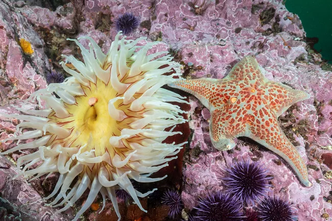
Leather Star
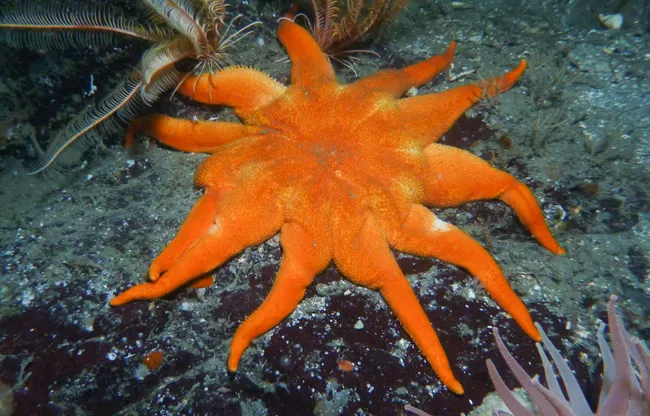
Morning Sun Star
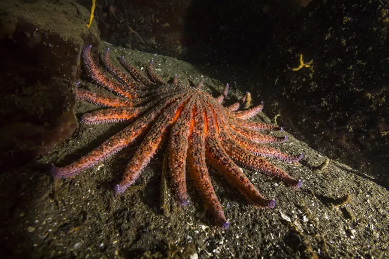
Sun flower Star
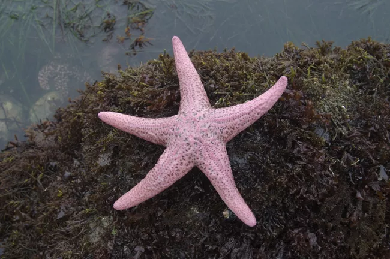
Pink Sea Star
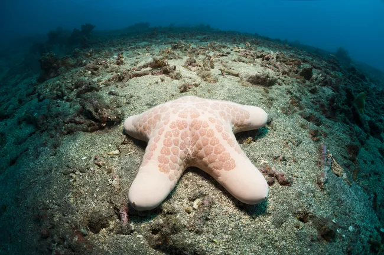
Granulated Sea Star
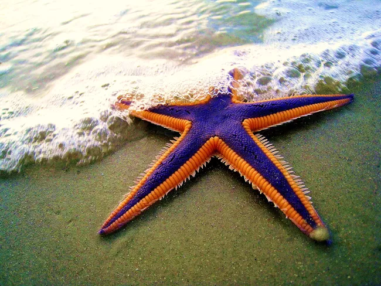
Royal Starfish
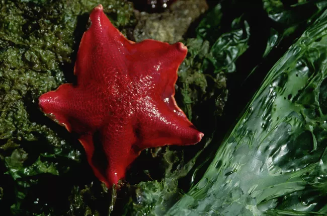
Bat Sea Star
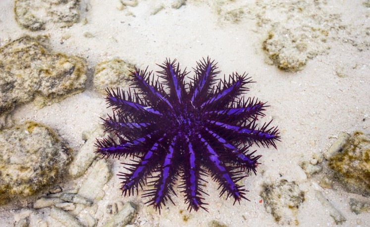
Crown-of-Thorns Starfish
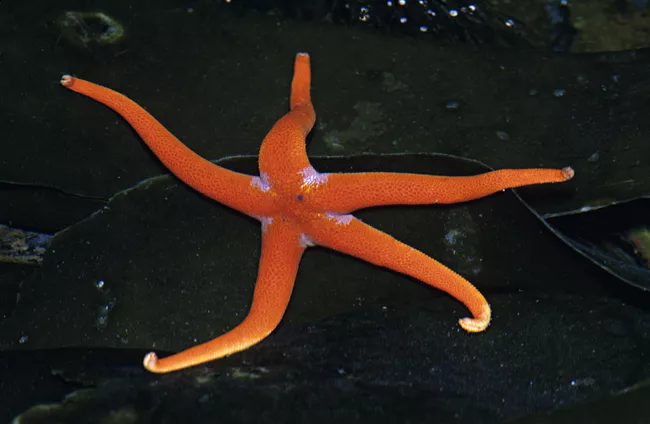
Pacific Blood Star
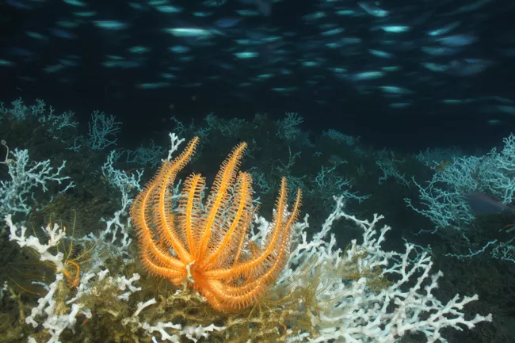
Brisingid Sea Star
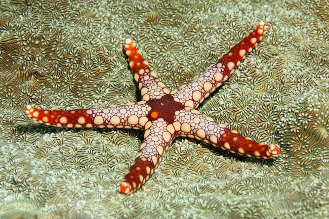
Necklace Starfish
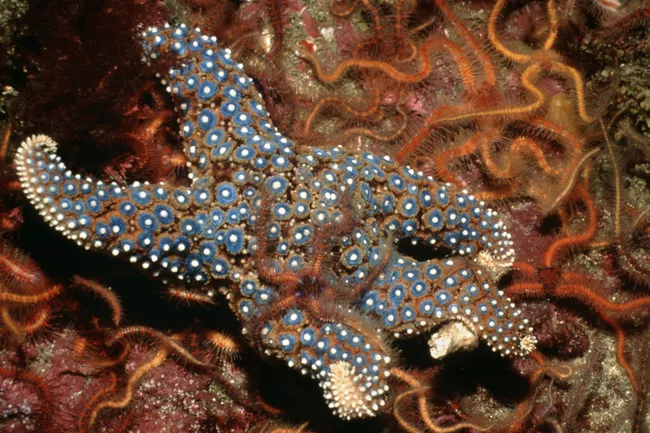
Giant Spined Star
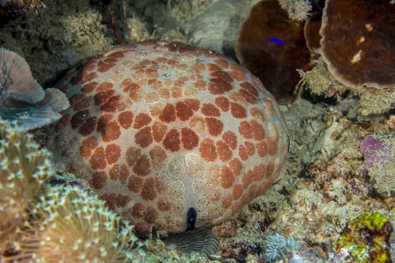
Pincushion Starfish
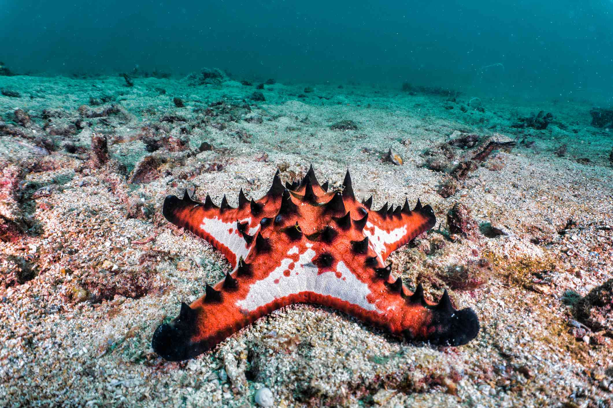
Chocolate Chip Sea Star
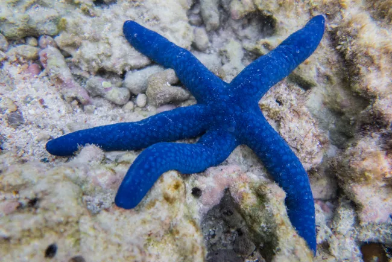
Blue Sea Star
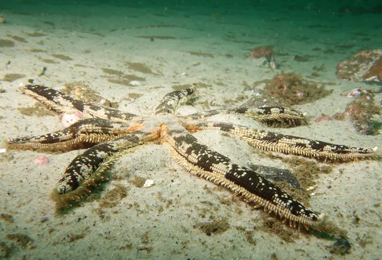
Australian Southern Sand Star
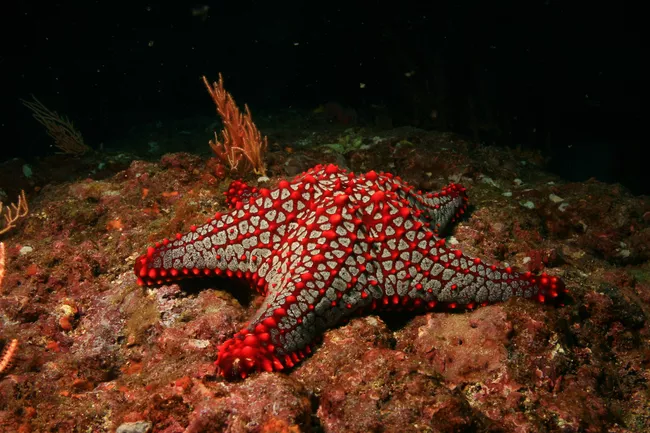
Panamic Cushion Star